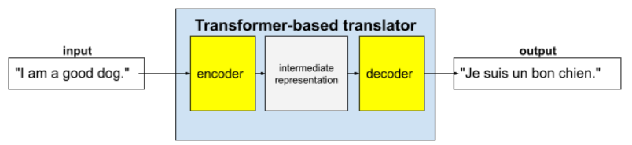

Start with the layer that failed
A language model first turns text into tokens, then represents those tokens as vectors. Its learned parameters help it predict a continuation from the tokens it can currently see. That description matters operationally: training changes weights, a prompt supplies temporary instructions, and retrieval supplies missing evidence. A normal conversation does not itself update the model's weights.
Suppose an assistant gives yesterday's forecast. A more elaborate prompt cannot supply today's observation. Retrieve a timestamped weather record. If the assistant already has the correct record but returns the wrong schema, tighten the output contract. If the same behavior fails across many representative tasks despite good evidence, compare model adaptation against the current baseline on held-out cases.
What embeddings and attention do
word2vec illustrates static word representations: CBOW predicts a target word from surrounding words, while Skip-gram predicts nearby words from a target. Transformers begin with token embeddings but compute a representation that depends on the current context. “Bank” in “the bank raised rates” can be processed differently from “the river bank flooded.”
Attention compares learned queries and keys, then mixes values. Multiple heads can model different relationships in parallel. This is a computation within a run, not a search of the web or a durable memory. Attention weights also do not provide a complete explanation of why a response was chosen. The original 2017 Transformer had both encoder and decoder; many current language-model deployments use related decoder-only architectures.
For a question about a repo's current API, the model's learned representation can help interpret code, but only inspected files can establish the repo's actual version and behavior. Supply paths and test evidence, then verify the cited lines.
A context window is finite. Adding more files can make the relevant evidence harder to find; Lost in the Middle showed position sensitivity under its tested settings. Anthropic's context-engineering guidance recommends selecting and compacting useful state. For code work, preserve task, file paths, decisions, failed tests and next action in a short checkpoint, while retaining the original logs for verification. See how a coding agent finds the right files.
Why instruction following is a separate step
Next-token pretraining teaches a model to predict text across many examples. The historical InstructGPT study then used demonstrations for supervised fine-tuning, human rankings to train a reward model, and reinforcement learning against that model. Its reported preferences belong to that study's prompt distribution and model comparisons; they are not a promise for a modern model on your task.
Preference optimization can improve the behavior a grader rewards, but a reward model is still a proxy. For a production workflow, test the exact actions and evidence you care about. A well-written response is not proof that the underlying tool action was correct.
Read the original work
These sources support the specific concepts above. Their task settings and publication status matter when applying a result.


- word2vecRead for the historical CBOW and Skip-gram objectives; these static vectors are not the full story of contextual models.
- Attention Is All You NeedRead Figures 1–2 for the original encoder-decoder Transformer and attention computation.
- Training language models to follow instructions with human feedbackRead for one documented demonstration, preference-model and reinforcement-learning pipeline.
- Lost in the MiddlePosition-sensitive long-context retrieval under the paper's test settings.
- Effective context engineering for AI agentsPractical guidance on selecting and compacting task state.
- Google ML Crash Course · Figure 2Google ML Crash Course figure; reproduced as published.